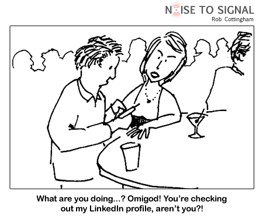

|
The
SocialFusion project in mobile social networks at
the University of Colorado at Boulder's Department
of Computer Science seeks to conduct ground-breaking
research in mobile systems, social networks,
networking privacy/anonymity, data mining, mobility,
user interfaces, mobile cloud infrastructure, and
context-aware computing. The
SocialFusion Project fuses together location-aware
mobile networks, sensor networks, and context-aware
social networks to enable a new generation of exciting
mobile cloud applications that are personalized to
your location, activities, preferences, and friendship
relationships. Some examples of context-aware
applications we have built and deployed include:
- OutWithFriendz, an Android
and iPhone app that enables us to study how
groups of mobile users make decisions about
where to go out for lunch/dinner and when
- SocialFlicks, which
combines an iPhone user's personal location with
the user's Facebook profile to play video on a
nearby screen customized to the preferences of
that user, and
- a context-aware music
jukebox, which plays songs you want to hear when
you walk into a room.
- SocialDining, which
recommends restaurants to groups of mobile
users/friends
- RescueMe, which provides
mobile augmented reality to guide users within
buildings in emergency evacuation situations,
such as fires
- An augmented reality
mobile application to facilitate healthy grocery
shopping
- A danger-sensing mobile
application called myBlackBox that is customized
for individuals and provides warning
notifications whenever it senses danger
We
are building the SocialFusion infrastructure to
support context-aware mobile cloud computing.
We also are building novel applications on top of
SocialFusion to demonstrate the power of
context-aware mobile cloud computing.
Prof. Han summarized our thoughts in the talk "Towards
Context-Aware
Computing
Via
the Mobile Social Cloud" at the June 2010 Microsoft
Research
Networking
Summit
on Mobile Cloud Computing in Seattle,
Washington.

- Paramvir
Bahl, Richard Y. Han, Li Erran Li, and
Mahadev Satyanarayanan. 2012. "Advancing
the state of mobile cloud computing."
In Proceedings of the third ACM
workshop on Mobile cloud computing and
services (MCS '12). pp. 21-28.
DOI=10.1145/2307849.2307856
http://doi.acm.org/10.1145/2307849.2307856
- Best Paper
Award: Junho Ahn, Richard Han, "RescueMe:
An Indoor Mobile Augmented-Reality
Evacuation System by Personalized
Pedometry", 2011 IEEE
Asia-Pacific Services Computing Conference
(APSCC 2011), pp. 70-77.
- Aaron
Beach, Mike Gartrell, Richard Han, "Social-K:
Real-Time K-Anonymity Guarantees for
Social Network Applications", IEEE International Workshop on
SECurity and SOCial Networking (SESOC), 2010,
pp. 600-606.
- Aaron
Beach, Mike Gartrell, Richard Han, "Solutions
to
Security
and Privacy Issues in Mobile Social
Networking," cse, vol. 4,
pp.1036-1042, 2009 International Conference
on Computational Science and Engineering,
2009 (Workshop on
the Social Mobile Web 2009, associated
with IEEE
SocialCom 2009).
- Gartrell
M., Beach A., Ramanarayanankrishnaniyer J.,
Xing X., Lv Q., Han R., Mishra S., Seada K.,
"Integrating
Wikipedia,
Facebook, and Other Personal Online
Context into Collaborative
E-Brainstorming,"
Workshop on Collective Intelligence In
Organizations (CIorg): Tools and Studies,
2010, associated with GROUP 2010.
- Mahnaz
Roshanaei, Richard Han, Shivakant Mishra,
“EmotionSensing: Predicting Mobile User
Emotions”, IEEE/ACM International Conference
on Social Networks Analysis and Mining
(ASONAM 2017). 6 pages. (to
appear)
|
Publications:
- Shuo
Zhang, Khaled Alanezi, Mike Gartrell,
Richard Han, Qin Lv, Shivakant Mishra, “Understanding
Group Event Scheduling via the
OutWithFriendz Mobile Application”, Proceedings
of the ACM on Interactive, Mobile,
Wearable and Ubiquitous Technologies
(IMWUT), Issue 4, December 2017 (will
be presented at UbiComp 2018).
- Aaron
Beach, Mike Gartrell, Xinyu Xing, Richard
Han, Qin Lv, Shivakant Mishra, Karim Seada,
"Fusing
Mobile, Sensor, and Social Data To Fully
Enable Context-Aware Computing", Eleventh ACM
Workshop on Mobile Computing Systems and
Applications (HotMobile), 2010, pp.
61-66.
- Aaron
Beach, Mike Gartrell, Sirisha Akkala, Jack
Elston, John Kelley, Keisuke Nishimoto,
Baishakhi Ray, Sergei Razgulin, Karthik
Sundaresan, Bonnie Surendar, Michael Terada,
and Richard Han, "WhozThat?
Evolving
an Ecosystem for Context-Aware Mobile
Social Networks", IEEE Network,
July/August 2008, pp. 50-55.
- Mike
Gartrell, Xinyu Xing, Qin Lv, Aaron Beach,
Richard Han, Shivakant Mishra, Karim Seada,
"Enhancing
Group Recommendation by Incorporating
Social Relationship Interactions", GROUP 2010.
- Aaron
Beach, Mike Gartrell, Richard Han, "q-Anon:
Rethinking Anonymity for Social Networks",
in
Proceedings
of the IEEE Second International
Conference on Social Computing
(SocialCom), August 2010, pp.
185-192. doi:10.1109/SocialCom.2010.34.
- Aaron
Beach, Mike Gartrell, Richard Han, "q-Anon:
Practical Anonymity for Social Networks",
International Journal of
Social Computing and Cyber-Physical
Systems (IJSCCPS), Inderscience, 2012
- Vol. 1, No.3 pp. 223 - 241.
- Junho
Ahn, James Williamson, Mike Gartrell,
Richard Han, Qin Lv, and Shivakant Mishra.
2015.
Supporting Healthy Grocery Shopping via
Mobile Augmented Reality. ACM
Transactions on Multimedia Computing,
Communications, and Applications
(TOMM), vol. 12, 1s, Article 16
(October 2015), pp. 1-24.
DOI=http://dx.doi.org/10.1145/2808207
- Junho
Ahn, Richard Han, myBlackBox:
Blackbox Mobile Cloud Systems for
Personalized Unusual Event Detection,
Sensors, Volume 16, Issue 5, 753;
doi:10.3390/s16050753, 20 pages.
|
|
Technical
Reports/Theses:
- Aaron
Beach, Mike Gartrell, Richard Han,
Shivakant Mishra, "Rethinking
Anonymity for Social Networks",
Technical Report CU-CU-1065-10,
Department of Computer Science, University
of Colorado at Boulder, June 2010.
- Aaron
Beach, Mike Gartrell, Richard Han, Shivakant
Mishra, "CawbWeb:
Towards
a
Standardized
Programming Framework to Enable a
Context-Aware Web", Technical Report,
CU-CS-1063-10, Department of Computer
Science, University of Colorado at Boulder,
March 2010.
- Mike
Gartrell, Aaron Beach, Jai
Ramanarayanankrishnaniyer, Xinyu Xing,
Richard Han, Qin Lv, Shivakant Mishra, Karim
Seada, "Integrating
Wikipedia
and Facebook Context into Collaborative
E-Brainstorming," Technical Report
CU-CS-1073-10, Department of Computer
Science, University of Colorado at Boulder,
September 2010.
|
- Aaron
Beach, Mike Gartrell, Xinyu Xing, Richard
Han, Qin Lv, Shivakant Mishra, Karim Seada,
"SocialFusion:
Context-Aware Inference and Recommendation
By Fusing Mobile, Sensor, and Social Data",
Technical Report CU-CS-1059-09, Department
of Computer Science, University of Colorado
at Boulder, December 2009.
- Aaron
Beach, Mike Gartrell, Baishakhi Ray, and
Richard Han, "Secure
SocialAware: A Security Framework for
Mobile Social Networking Applications",
Technical Report CU-CS-1054-09, Department
of Computer Science, University of Colorado
at Boulder, June 2009.
- Mike
Gartrell, "SocialAware:
Context-Aware Multimedia Presentation
Via Mobile Social Networks",
M.S. Thesis, Department of Computer Science,
University of Colorado at Boulder, December
2008.
|
|